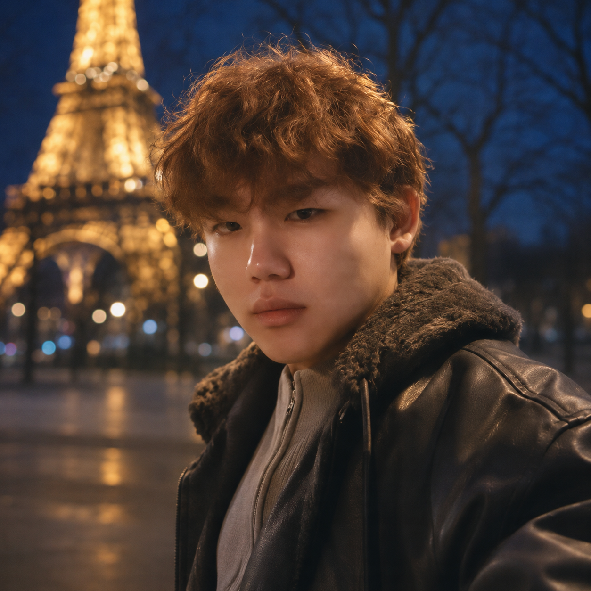

Taiyuan University of Technology
Master’s student · Digital Media Art
AI products · 3D content · Digital experiences
康锦文
Master’s student in Digital Media Art at Taiyuan University of Technology.
Product / Art Intern at Meshy LLC.
Based in Beijing, China.

Master’s student · Digital Media Art
Product / Art Intern · Beijing, China
Working on AI-assisted 3D creation, product evaluation, and creative workflows.
Designed and developed a platform for comparing 3D generation models. The workflow supports controlled comparisons, blind pairwise assessment, and traceable links between ratings, model versions, parameters, and source samples.
Planned an immersive cultural heritage experience for Yuanshen Temple. Translated cultural content into visitor journeys, interaction flows, and delivery requirements, coordinating 3D art, AI-assisted animation, and Unreal Engine development.
Led quality management for virtual product models and 3D environment data used in robotics training. Developed asset specifications, review criteria, and feedback workflows covering geometry, scale, topology, materials, and semantic consistency.
User interviews, requirements definition, comparative evaluation, controlled experiments, and rapid prototyping.
Blender, Unreal Engine, Maya, Python, and AI-assisted 3D and visual content workflows.
Generative 3D · Human–AI interaction · Creative tools · Digital experiences · 3D asset evaluation
AI creative tools, 3D workflows, and thoughtful digital experiences.